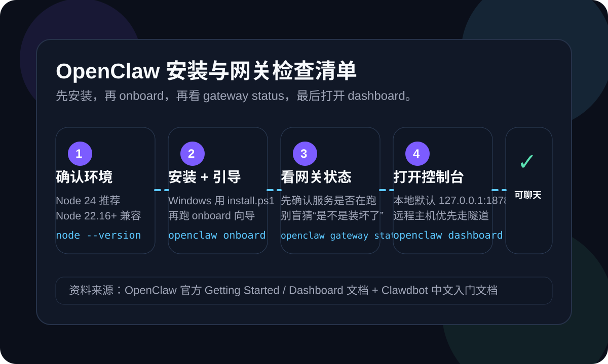

这页适合谁看
- 第一次装 OpenClaw，想知道最短验证路径的人
- 已经执行过安装脚本，但不确定是不是已经真正可用的人
- 准备接飞书、浏览器或其他渠道前，想先把底座跑稳的人
很多人不是不会装，而是装完以后不知道该先看哪里：Control UI 打不开、gateway 状态不确定、远程主机和本机地址也容易混。官方 Getting Started 给出的最短路径其实很清楚：先确认 Node 版本，再安装并跑 onboarding，随后用 openclaw gateway status 看网关，再用 openclaw dashboard 验证控制台。下面把这条路径收成一页可直接照着走的检查清单。

官方的核心建议不是“先把所有渠道都接完”，而是先通过 Control UI 跑通第一轮聊天。只要这一步通了，说明安装、网关、认证和浏览器访问这条链路已经基本正常。
官方当前推荐 Node 24；Node 22 LTS 在 22.16+ 仍兼容。先执行 node --version，不要跳过这一步。
Windows 用 iwr -useb https://openclaw.ai/install.ps1 | iex，然后执行 openclaw onboard --install-daemon。
用 openclaw gateway status 看服务是不是已经起来，再用 openclaw dashboard 打开控制台。
这 6 步按顺序走，能把“安装是否成功”“网关是否可用”“控制台为什么打不开”这几个最常见问题拆开看清楚。
如果版本太旧，后面出现的问题经常不是 OpenClaw 本身，而是运行时环境不兼容。官方当前写法是：Node 24 推荐，Node 22 LTS（22.16+）仍支持兼容。最稳的做法，是先把 Node 版本确认掉，再继续往下做。
如果你在 Windows PowerShell 环境，官方安装方式是 iwr -useb https://openclaw.ai/install.ps1 | iex。这一步做完后，不代表已经全部完成，它只是把 CLI 和基础环境装好，真正的首次可用，还得看 onboarding 和 gateway。
openclaw onboard --install-daemon 会把认证、网关配置以及可选渠道初始化好。对第一次接触 OpenClaw 的人来说，这一步比手动东拼西凑配置更稳，也更符合官方给的默认起步路径。
如果你已经装成服务，下一步不是急着找网页，而是先执行 openclaw gateway status。这一步的意义，是确认网关确实在运行。很多“dashboard 打不开”的根因，其实是 gateway 根本没起来，或者起在别的机器上。
官方文档明确写到：最快的首次聊天方式，是直接打开 Control UI。你可以执行 openclaw dashboard，也可以在本地网关主机上访问 http://127.0.0.1:18789/。如果页面能正常打开并能开始聊天，说明你的底层链路已经打通。
这一点特别容易忽略。Dashboard 文档写得很清楚：控制台跑在 gateway host 上。如果你的 gateway 装在远程机器，而你却在本机浏览器里直接打开本地地址，就会误判成“OpenClaw 没装好”。远程场景更适合走 SSH tunnel、Tailscale Serve 或其他受控方式，不建议把管理界面直接暴露到公网。
openclaw gateway status 能明确返回运行状态，而不是报找不到服务、连不上或没有输出。
浏览器能访问控制台，说明网关和浏览器访问路径至少是通的。
官方把 Control UI 作为最快聊天路径，所以第一次验证不需要先把飞书或其他渠道全接完。
当你明确 gateway host 是哪台机器时，排查路径会清爽很多，不会把地址问题误判成安装问题。
这类判断太粗。先看 openclaw gateway status，再看你访问的地址是不是 gateway host，最后再看认证。这样拆开排，才不会在“网络 / 地址 / 网关 / 认证”四类问题里乱绕。
Dashboard 文档直接提醒：Control UI 是管理面，不适合直接暴露到公网。更稳的做法，是 localhost、Tailscale Serve 或 SSH tunnel 这类受控访问方式。
官方文档给出 openclaw gateway --port 18789 作为快速测试或排障模式。它适合短时观察启动输出，不适合长期代替服务模式。
如果你有服务账户、特殊配置目录或多环境需求，再考虑 OPENCLAW_HOME、OPENCLAW_STATE_DIR、OPENCLAW_CONFIG_PATH。对第一次起步的人来说，优先顺序仍然应该是：先跑通，再做定制。
如果这条安装链路已经通了，下一步更适合继续补“学习路线、FAQ 排查、业务落地”这三类内容。
适合刚装好，准备把 OpenClaw 接进真实业务的人继续往下看。
继续排查安装、网关、Dashboard、飞书接入等高频卡点。
如果你想把 OpenClaw 接到官网咨询、内容生产和客户承接链路，这里有完整路径。